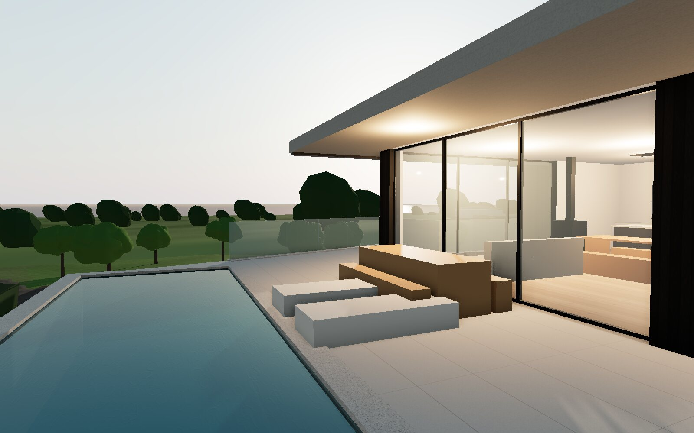
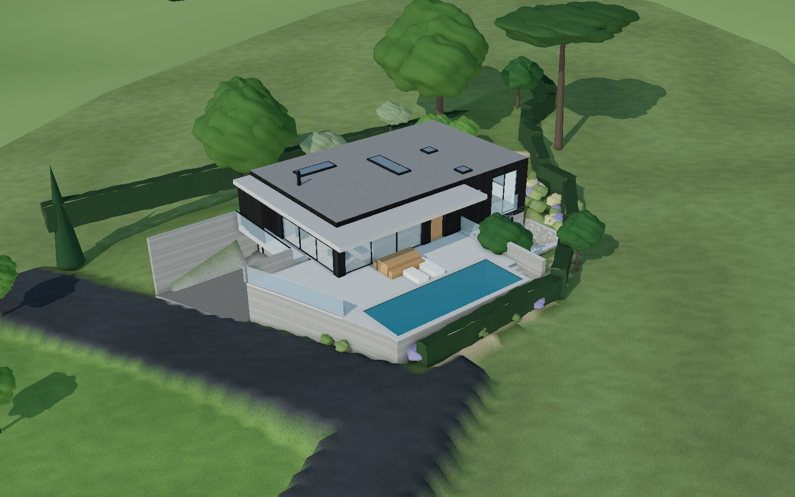
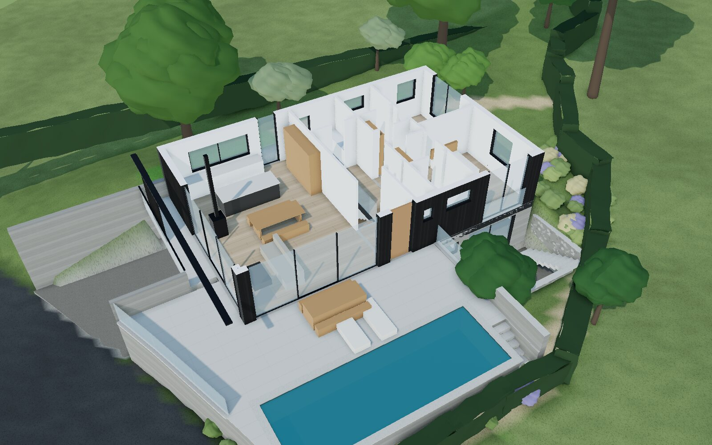
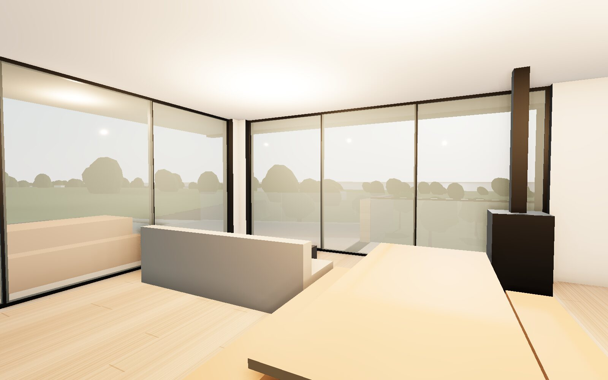
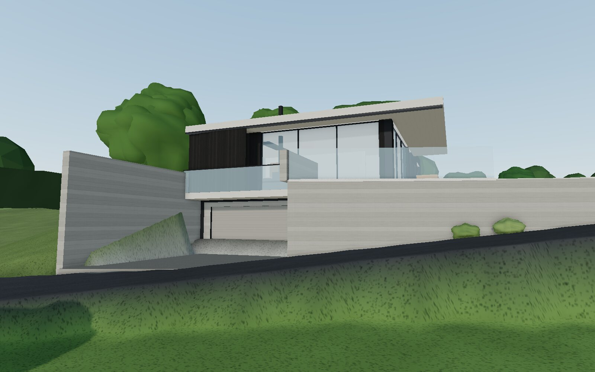
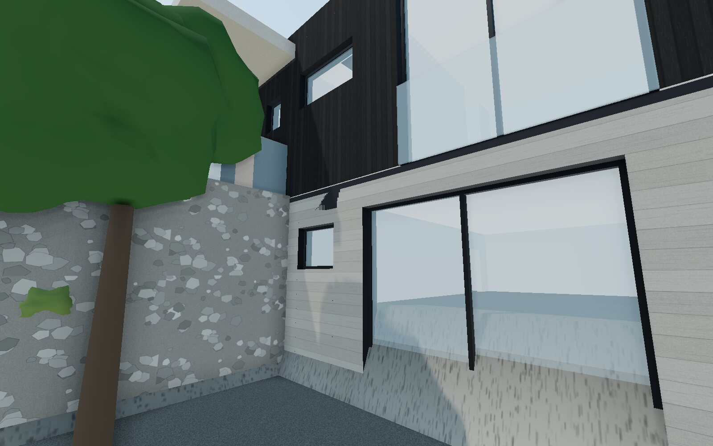
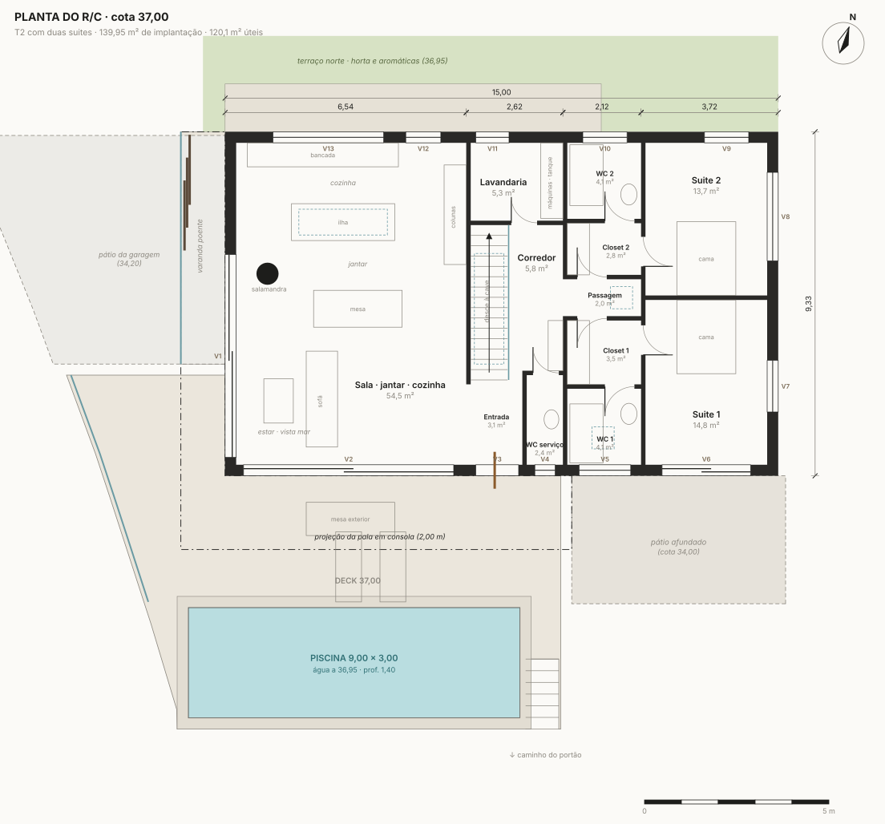
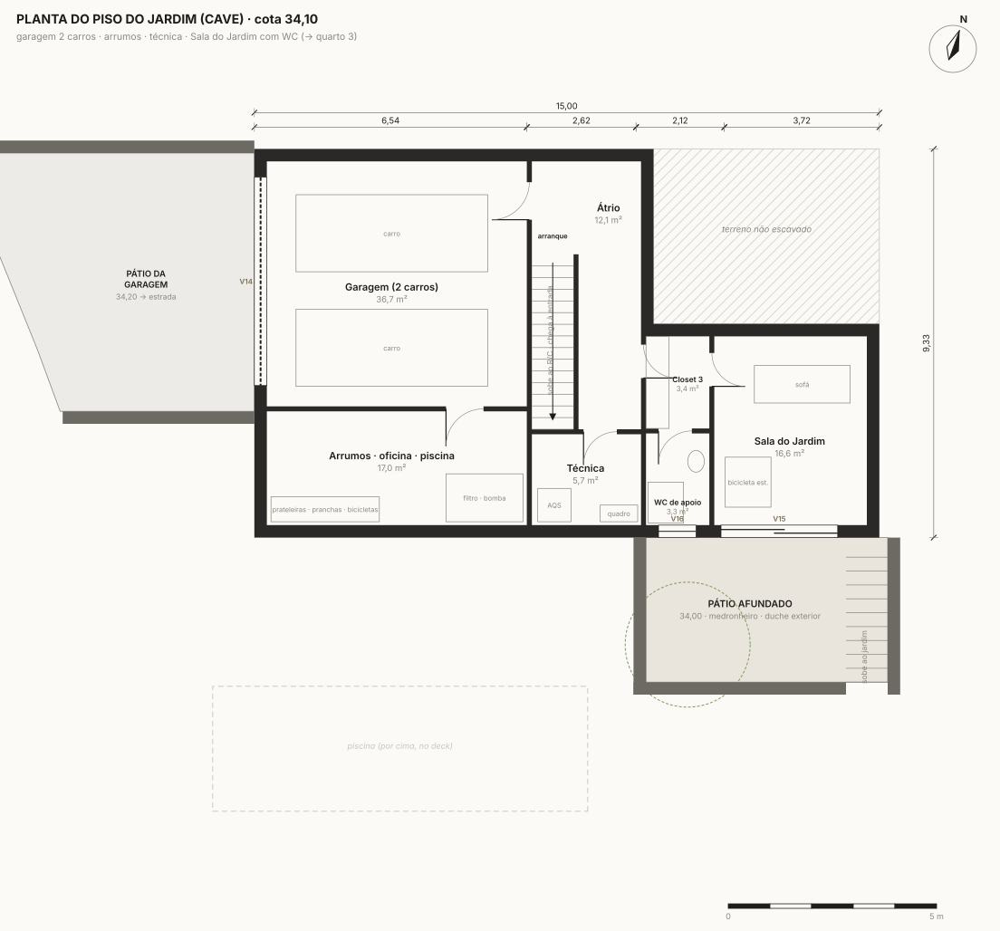
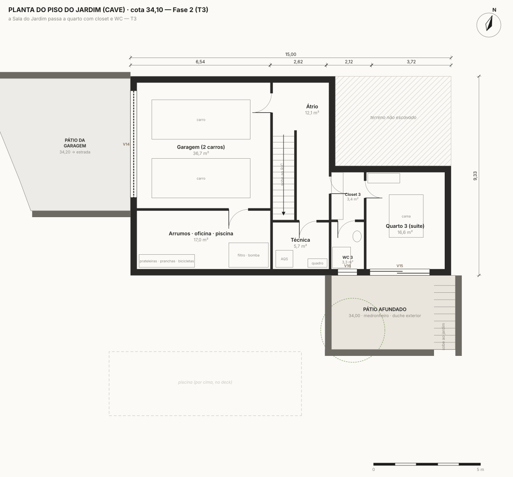

<title>Casa Plinto</title>
<link rel="preconnect" href="https://fonts.googleapis.com">
<link rel="preconnect" href="https://fonts.gstatic.com" crossorigin>
<link rel="stylesheet" href="https://fonts.googleapis.com/css2?family=Archivo:wdth,wght@112,500;112,700;125,800&family=Source+Serif+4:ital,opsz,wght@0,8..60,400;0,8..60,600;1,8..60,400&family=IBM+Plex+Mono:wght@400;500&display=swap">
<style>
/* Layout: caderno de obra de um atelier — imagem de abertura com carimbo de desenho, depois secções em coluna de leitura com pranchas largas para desenhos e 3D. */
:root {
  --bg: #eef0ee;          /* cal fria */
  --sheet: #fbfbf9;       /* papel das pranchas */
  --ink: #1b1a18;         /* pinho carbonizado */
  --muted: #5f625d;       /* granito */
  --rule: #c9ccc6;
  --accent: #2b6b66;      /* água da piscina / Atlântico */
  --accent-ink: #ffffff;
  --warn: #9a5b12;
  --ok: #2f6b3a;
  --chip: #e2e5e1;
  --display: "Archivo", "Helvetica Neue", Arial, sans-serif;
  --body: "Source Serif 4", Georgia, "Times New Roman", serif;
  --mono: "IBM Plex Mono", ui-monospace, "SFMono-Regular", Menlo, monospace;
  --measure: 66ch;
  --wide: 1180px;
}
@media (prefers-color-scheme: dark) { :root:not([data-theme="light"]) {
  --bg: #141413; --sheet: #1d1c1a; --ink: #ecebe6; --muted: #a3a59f; --rule: #3a3a36;
  --accent: #7cbcb4; --accent-ink: #0f1a19; --warn: #e0a65a; --ok: #8fc79a; --chip: #2a2a27; color-scheme: dark; } }
:root[data-theme="dark"] {
  --bg: #141413; --sheet: #1d1c1a; --ink: #ecebe6; --muted: #a3a59f; --rule: #3a3a36;
  --accent: #7cbcb4; --accent-ink: #0f1a19; --warn: #e0a65a; --ok: #8fc79a; --chip: #2a2a27; color-scheme: dark; }

* { box-sizing: border-box; }
body { background: var(--bg); color: var(--ink); font-family: var(--body); font-size: 17px; line-height: 1.6; padding: 0 16px; margin: 0; }
a { color: var(--accent); }
:focus-visible { outline: 2px solid var(--accent); outline-offset: 2px; }
img { max-width: 100%; display: block; }
.wrap { max-width: var(--wide); margin: 0 auto; }
.read { max-width: var(--measure); }
h1, h2, h3 { font-family: var(--display); text-wrap: balance; margin: 0; letter-spacing: -0.01em; }
h2 { font-size: clamp(1.5rem, 1.1rem + 1.6vw, 2.1rem); font-weight: 700; font-stretch: 112%; }
h3 { font-size: 1.05rem; font-weight: 700; font-stretch: 112%; }
p { margin: 0; }
.eyebrow { font-family: var(--mono); font-size: 0.74rem; letter-spacing: 0.12em; text-transform: uppercase; color: var(--muted); }
.num, td.n, .mono { font-family: var(--mono); font-variant-numeric: tabular-nums; }

/* ---------- abertura */
.hero { max-width: var(--wide); margin: 0 auto; padding-block: 24px 8px; display: grid; gap: 0; }
.hero figure { margin: 0; position: relative; }
.hero img { width: 100%; aspect-ratio: 16 / 10; object-fit: cover; border-radius: 2px; }
.carimbo { display: grid; grid-template-columns: minmax(0, 1.25fr) minmax(0, 1fr); border: 1.5px solid var(--ink); border-top: none; background: var(--sheet); }
.carimbo .name { padding: 22px 22px 20px; border-right: 1.5px solid var(--ink); display: grid; gap: 12px; align-content: start; }
.carimbo h1 { font-size: clamp(2.6rem, 1.6rem + 5vw, 4.8rem); font-weight: 800; font-stretch: 125%; line-height: 0.92; letter-spacing: -0.02em; }
.carimbo .lede { font-size: 1.08rem; max-width: 46ch; }
.carimbo dl { margin: 0; display: grid; grid-template-columns: 1fr 1fr; }
.carimbo dl div { padding: 10px 14px; border-bottom: 1px solid var(--rule); border-right: 1px solid var(--rule); min-width: 0; }
.carimbo dl div:nth-child(2n) { border-right: none; }
.carimbo dt { font-family: var(--mono); font-size: 0.68rem; letter-spacing: 0.1em; text-transform: uppercase; color: var(--muted); }
.carimbo dd { margin: 2px 0 0; font-family: var(--mono); font-size: 0.92rem; font-variant-numeric: tabular-nums; }
@media (max-width: 760px) { .carimbo { grid-template-columns: 1fr; } .carimbo .name { border-right: none; border-bottom: 1.5px solid var(--ink); } }

nav.toc { max-width: var(--wide); margin: 0 auto; padding-block: 14px; display: flex; flex-wrap: wrap; gap: 6px 18px; font-family: var(--mono); font-size: 0.8rem; border-bottom: 1px solid var(--rule); }
nav.toc a { color: var(--muted); text-decoration: none; }
nav.toc a:hover { color: var(--ink); }

section { max-width: var(--wide); margin: 0 auto; padding-block: 48px; border-bottom: 1px solid var(--rule); display: grid; gap: 22px; }
section > header { display: grid; gap: 8px; }

/* ---------- ideia */
.ideia { display: grid; grid-template-columns: minmax(0, 1.2fr) minmax(0, 1fr); gap: 36px; align-items: start; }
.ideia .text { display: grid; gap: 14px; }
.moves { list-style: none; margin: 0; padding: 0; display: grid; gap: 14px; }
.moves li { display: grid; grid-template-columns: 56px minmax(0, 1fr); gap: 14px; align-items: start; }
.moves b { font-family: var(--display); font-stretch: 112%; display: block; margin-bottom: 2px; }
.sw { width: 56px; height: 56px; border-radius: 2px; border: 1px solid var(--rule); }
.sw.timber { background: repeating-linear-gradient(90deg, #1d1b19 0 8px, #0f0e0d 8px 10px); }
.sw.stone { background: repeating-linear-gradient(180deg, #a6a196 0 7px, #938e84 7px 8px); }
.sw.water { background: linear-gradient(160deg, #3d8f94, #1f5d63); }
.sw.green { background: radial-gradient(circle at 30% 30%, #7d9a5c, #4c6a2f); }
@media (max-width: 860px) { .ideia { grid-template-columns: 1fr; } }

/* ---------- imagens */
.gallery { display: grid; grid-template-columns: repeat(2, minmax(0, 1fr)); gap: 18px; }
.gallery figure { margin: 0; display: grid; gap: 8px; min-width: 0; }
.gallery img { width: 100%; aspect-ratio: 16 / 10; object-fit: cover; border-radius: 2px; }
.gallery figcaption { font-size: 0.92rem; color: var(--muted); }
.gallery figcaption b { color: var(--ink); font-family: var(--display); font-stretch: 112%; font-size: 0.9rem; }
@media (max-width: 700px) { .gallery { grid-template-columns: 1fr; } }
.note { font-size: 0.88rem; color: var(--muted); }

/* ---------- desenhos */
.tabs { display: flex; flex-wrap: wrap; gap: 6px; }
.tabs button { font-family: var(--mono); font-size: 0.8rem; padding: 7px 11px; border: 1px solid var(--rule); background: transparent; color: var(--ink); border-radius: 2px; cursor: pointer; }
.tabs button[aria-selected="true"] { background: var(--ink); color: var(--bg); border-color: var(--ink); }
.prancha { background: #fbfaf7; border: 1px solid var(--rule); border-radius: 2px; overflow-x: auto; }
.prancha img { width: 100%; min-width: 640px; height: auto; }
.prancha-cap { display: flex; flex-wrap: wrap; justify-content: space-between; gap: 8px; font-size: 0.9rem; color: var(--muted); }

/* ---------- 3D */
.viewer { position: relative; background: var(--sheet); border: 1px solid var(--rule); border-radius: 2px; overflow: hidden; aspect-ratio: 16 / 10; max-width: 100%; }
.viewer img.poster { width: 100%; height: 100%; object-fit: cover; }
.viewer canvas { position: absolute; inset: 0; width: 100% !important; height: 100% !important; touch-action: none; }
.viewer .overlay { position: absolute; inset: auto 0 0 0; padding: 14px; display: flex; flex-wrap: wrap; gap: 10px; align-items: center; background: linear-gradient(transparent, rgba(0,0,0,0.55)); }
.btn { font-family: var(--mono); font-size: 0.82rem; padding: 9px 14px; border-radius: 2px; border: 1px solid var(--accent); background: var(--accent); color: var(--accent-ink); cursor: pointer; }
.btn.ghost { background: transparent; color: var(--ink); border-color: var(--rule); }
.controls3d { display: flex; flex-wrap: wrap; gap: 6px 8px; align-items: center; }
.controls3d label { font-family: var(--mono); font-size: 0.8rem; display: inline-flex; gap: 6px; align-items: center; padding: 6px 4px; }
#status3d { font-family: var(--mono); font-size: 0.8rem; color: #fff; }

/* ---------- tabelas */
.cols { display: grid; grid-template-columns: repeat(2, minmax(0, 1fr)); gap: 28px; align-items: start; }
@media (max-width: 820px) { .cols { grid-template-columns: 1fr; } }
.tbl { overflow-x: auto; }
table { border-collapse: collapse; width: 100%; font-size: 0.95rem; }
th, td { text-align: left; padding: 7px 8px; border-bottom: 1px solid var(--rule); vertical-align: top; }
th { font-family: var(--mono); font-size: 0.7rem; letter-spacing: 0.08em; text-transform: uppercase; color: var(--muted); font-weight: 500; }
td.n, th.n { text-align: right; white-space: nowrap; }
tr.sum td { font-weight: 600; border-bottom: 1.5px solid var(--ink); }
tr.sub td { color: var(--muted); }
.brief { list-style: none; margin: 0; padding: 0; display: grid; gap: 8px; }
.brief li { display: grid; grid-template-columns: 22px minmax(0, 1fr); gap: 8px; }
.tick { font-family: var(--mono); color: var(--ok); font-weight: 600; }
.chip { font-family: var(--mono); font-size: 0.72rem; padding: 2px 7px; border-radius: 2px; background: var(--chip); white-space: nowrap; }
.chip.ok { color: var(--ok); }
.chip.warn { color: var(--warn); }

/* ---------- T3 */
.phases { display: grid; grid-template-columns: repeat(2, minmax(0, 1fr)); gap: 18px; }
.phases figure { margin: 0; display: grid; gap: 8px; min-width: 0; }
.phases .prancha img { min-width: 520px; }
@media (max-width: 760px) { .phases { grid-template-columns: 1fr; } }

/* ---------- custo */
.bignums { display: grid; grid-template-columns: repeat(3, minmax(0, 1fr)); gap: 0; border: 1.5px solid var(--ink); background: var(--sheet); }
.bignums div { padding: 16px 18px; border-right: 1px solid var(--rule); display: grid; gap: 4px; min-width: 0; }
.bignums div:last-child { border-right: none; }
.bignums .v { font-family: var(--display); font-stretch: 112%; font-weight: 700; font-size: clamp(1.5rem, 1.1rem + 1.5vw, 2.2rem); font-variant-numeric: tabular-nums; }
.bignums .k { font-size: 0.9rem; color: var(--muted); }
@media (max-width: 700px) { .bignums { grid-template-columns: 1fr; } .bignums div { border-right: none; border-bottom: 1px solid var(--rule); } }
details { border-top: 1px solid var(--rule); padding-top: 10px; }
summary { cursor: pointer; font-family: var(--mono); font-size: 0.85rem; }

.twocol-list { display: grid; grid-template-columns: repeat(2, minmax(0, 1fr)); gap: 28px; }
.twocol-list ul { margin: 0; padding-left: 1.1em; display: grid; gap: 8px; }
@media (max-width: 760px) { .twocol-list { grid-template-columns: 1fr; } }

footer { max-width: var(--wide); margin: 0 auto; padding-block: 28px 56px; font-size: 0.85rem; color: var(--muted); display: grid; gap: 8px; }
@media (prefers-reduced-motion: reduce) { * { scroll-behavior: auto !important; } }
</style>

<header class="hero">
  <figure>
    
  </figure>
  <div class="carimbo">
    <div class="name">
      <span class="eyebrow">Nordic Sea · Carreço · Proposta B</span>
      <h1>Casa Plinto</h1>
      <p class="lede">Uma caixa de madeira queimada pousada num embasamento de pedra, com a sala e a piscina viradas ao poente. Abre como T2 com duas suites e passa a T3 quando a Sala do Jardim, no piso de baixo, ganha cama. Cabe no envelope do PIP e custa o mesmo que a v4.2.</p>
    </div>
    <dl>
      <div><dt>Local</dt><dd>Trav. de João Pires, Carreço</dd></div>
      <div><dt>Parcela A</dt><dd>685,22 m²</dd></div>
      <div><dt>Implantação</dt><dd>139,95 m² (≤ 140)</dd></div>
      <div><dt>Área bruta</dt><dd>257,1 m² (v4: 321,3)</dd></div>
      <div><dt>Cotas</dt><dd>34,10 · 37,00 · 40,45</dd></div>
      <div><dt>Altura sobre o R/C</dt><dd>+3,45 m (PIP +5,50)</dd></div>
      <div><dt>Fase 1 · T2</dt><dd>≈ 223 k€ s/ IVA</dd></div>
      <div><dt>T3 + piscina + jardim</dt><dd>≈ 256 k€ s/ IVA</dd></div>
    </dl>
  </div>
</header>

<nav class="toc" aria-label="Secções">
  <a href="#ideia">A ideia</a><a href="#imagens">Imagens</a><a href="#desenhos">Desenhos</a><a href="#modelo">Modelo 3D</a><a href="#programa">Programa</a><a href="#t3">T2 → T3</a><a href="#custo">Custo</a><a href="#jardim">Jardim e piscina</a><a href="#condicionantes">Condicionantes</a>
</nav>

<section id="ideia">
  <header><span class="eyebrow">Conceito</span><h2>Três materiais, dois jardins, um só piso para viver</h2></header>
  <div class="ideia">
    <div class="text read">
      <p>O terreno desce para poente e a estrada nova passa à cota da cave. A casa aproveita isso: em baixo, um embasamento de betão e granito que encaixa no declive e guarda a garagem, os arrumos e uma sala com jardim próprio; em cima, à cota 37,00, um volume térreo revestido a ripado de pinho carbonizado, com a sala, a cozinha e as duas suites.</p>
      <p>Por cima de tudo, uma laje fina de betão sai 2 metros para sul e 1,20 metros para poente. Faz de alpendre sobre a mesa exterior, tapa o sol alto do verão e enquadra a vista. A piscina corre ao longo da casa, ao nível da sala, abrigada da nortada pelo próprio volume.</p>
      <p>A sul, ao nível da cave, um pátio afundado com um medronheiro dá luz e porta à Sala do Jardim. É ali que nasce o terceiro quarto, sem mexer na fachada nem na implantação.</p>
      <p class="note">Mesma posição, orientação e área do retângulo do PIP. A diferença em relação à v4 está na forma: telhado plano a +3,45 m em vez de 2 águas a 37° com cumeeira a +8,12 m, o que tira do caminho a pergunta mais arriscada ao PDM.</p>
    </div>
    <ul class="moves">
      <li><span class="sw timber" aria-hidden="true"></span><div><b>Pinho carbonizado</b>Ripado de pinho autoclave queimado à maneira japonesa (yakisugi), feito em obra pelo dono de obra. Material barato, preto mate, dura décadas com óleo.</div></li>
      <li><span class="sw stone" aria-hidden="true"></span><div><b>Betão e granito</b>Embasamento, muros e pala no mesmo tom de pedra; betão de cofragem de tábua só onde se vê de perto. O pátio usa o granito que sair da escavação.</div></li>
      <li><span class="sw water" aria-hidden="true"></span><div><b>Vidro e água</b>Três grandes vãos de correr, todos para a vista ou para o sol. A piscina de 9 × 3 m fica à cota da sala.</div></li>
      <li><span class="sw green" aria-hidden="true"></span><div><b>Jardim atlântico</b>Prado nativo, carvalho, medronheiros, pinheiro-manso no alto, sebes de murta e loureiro. Pouca rega e pouca manutenção.</div></li>
    </ul>
  </div>
</section>

<section id="imagens">
  <header><span class="eyebrow">Imagens</span><h2>Como se vive</h2></header>
  <div class="gallery">
    <figure><figcaption><b>Vista de sudoeste.</b> A estrada nova chega à garagem; o deck e a piscina ficam por cima, à cota da sala.</figcaption></figure>
    <figure><figcaption><b>Maquete sem cobertura.</b> Sala, jantar e cozinha num só espaço de 54,5 m²; ao centro a entrada e a escada; a nascente as duas suites com closet de passagem.</figcaption></figure>
    <figure><figcaption><b>Sala.</b> Vidro até ao teto em dois lados, pé-direito de 2,85 m, salamandra virada à vista.</figcaption></figure>
    <figure><figcaption><b>Da estrada.</b> O portão da garagem fica à face do embasamento; por cima, a varanda poente e as portadas de ripado.</figcaption></figure>
    <figure><figcaption><b>Pátio afundado.</b> 20 m² ao nível da cave, com o granito da escavação e um medronheiro. Dá à Sala do Jardim luz, ar e porta própria.</figcaption></figure>
    <figure><figcaption><b>Deck ao fim da tarde.</b> 61 m² de deck ao nível da sala; a mesa fica debaixo da pala e as espreguiçadeiras ao sol.</figcaption></figure>
  </div>
  <p class="note">Imagens de estudo, tiradas do mesmo modelo que gera as plantas. A vegetação está desenhada como já crescida e o terreno à volta é aproximado.</p>
</section>

<section id="desenhos">
  <header><span class="eyebrow">Peças desenhadas</span><h2>Plantas, cortes e alçados</h2></header>
  <div class="tabs" role="tablist" aria-label="Escolher desenho">
    <button role="tab" id="t-rc" aria-selected="true" data-src="planta_rc.svg" data-cap="Planta do R/C, cota 37,00. T2 com duas suites, 120,1 m² úteis.">Planta R/C</button>
    <button role="tab" id="t-cave" aria-selected="false" data-src="planta_cave.svg" data-cap="Piso do jardim (cave), cota 34,10. Garagem para dois carros, arrumos, técnica e Sala do Jardim com WC.">Planta cave</button>
    <button role="tab" id="t-imp" aria-selected="false" data-src="implantacao.svg" data-cap="Implantação com norte para cima, sobre o limite da parcela A e a estrada nova do PIP.">Implantação</button>
    <button role="tab" id="t-ca" aria-selected="false" data-src="corte_aa.svg" data-cap="Corte A-A pela sala, deck e piscina, com o envelope do PIP a tracejado.">Corte A-A</button>
    <button role="tab" id="t-cb" aria-selected="false" data-src="corte_bb.svg" data-cap="Corte B-B pelas suites, Sala do Jardim e pátio afundado.">Corte B-B</button>
    <button role="tab" id="t-as" aria-selected="false" data-src="alcado_sul.svg" data-cap="Alçado sul: deck, pala, entrada em carvalho e o pátio afundado à direita.">Alçado sul</button>
    <button role="tab" id="t-ap" aria-selected="false" data-src="alcado_poente.svg" data-cap="Alçado poente, da estrada nova: embasamento, portão, varanda e portadas.">Alçado poente</button>
  </div>
  <div class="prancha" role="tabpanel" aria-labelledby="t-rc"></div>
  <div class="prancha-cap"><span id="drawcap">Planta do R/C, cota 37,00. T2 com duas suites, 120,1 m² úteis.</span><span class="mono">escala gráfica no desenho</span></div>
</section>

<section id="modelo">
  <header><span class="eyebrow">Modelo 3D</span><h2>Dar a volta à casa</h2><p class="read note">Arraste para rodar, use a roda ou dois dedos para aproximar. As vistas abaixo levam aos pontos das imagens.</p></header>
  <div class="viewer" id="viewer">
    
    <div class="overlay"><button class="btn" id="open3d" type="button">Abrir o modelo 3D</button><span id="status3d" aria-live="polite"></span></div>
  </div>
  <div class="controls3d" id="controls3d" hidden>
    <button class="btn ghost" type="button" data-cam="aerial">Aérea</button>
    <button class="btn ghost" type="button" data-cam="hero">Deck</button>
    <button class="btn ghost" type="button" data-cam="road">Estrada</button>
    <button class="btn ghost" type="button" data-cam="living">Sala</button>
    <button class="btn ghost" type="button" data-cam="patio">Pátio</button>
    <button class="btn ghost" type="button" data-cam="cutaway">Maquete</button>
    <label for="noroof"><input type="checkbox" id="noroof"> sem cobertura</label>
    <label for="dusk"><input type="checkbox" id="dusk"> fim de tarde</label>
  </div>
</section>

<section id="programa">
  <header><span class="eyebrow">Programa e áreas</span><h2>O que pediste, onde está</h2></header>
  <div class="cols">
    <ul class="brief">
      <li><span class="tick">✓</span><span><b>Sala grande</b> com estar virado à vista, jantar para 8 e salamandra; 54,5 m² em conjunto com a cozinha.</span></li>
      <li><span class="tick">✓</span><span><b>Cozinha grande</b>: bancada de 4,1 m sob a janela norte, ilha de 2,80 m sob claraboia e 2,7 m de colunas com despensa.</span></li>
      <li><span class="tick">✓</span><span><b>Lavandaria</b> de 5,3 m² com porta direta para o estendal no terraço norte.</span></li>
      <li><span class="tick">✓</span><span><b>Quartos com WC e closet</b>: cada suite entra pelo próprio closet, que dá para o WC.</span></li>
      <li><span class="tick">✓</span><span><b>WC comum de serviço</b> logo à entrada, fora da zona privada.</span></li>
      <li><span class="tick">✓</span><span><b>Garagem para 2 carros</b> (36,7 m²) com portão à cota da estrada.</span></li>
      <li><span class="tick">✓</span><span><b>Arrumos</b>: oficina de 17 m² ao lado da garagem (pranchas, bicicletas, equipamento da piscina) e átrio de 12 m².</span></li>
      <li><span class="tick">✓</span><span><b>Alpendre</b>: a pala de 2,00 m cobre 21 m² de deck junto à sala.</span></li>
      <li><span class="tick">✓</span><span><b>Jardim e piscina</b>: piscina de 9 × 3 m à cota da sala, terraço norte com horta, pátio afundado e jardim nativo.</span></li>
      <li><span class="tick">✓</span><span><b>T2 que cresce para T3</b> com quarto e WC, sem obra exterior.</span></li>
    </ul>
    <div class="tbl">
      <table>
        <thead><tr><th>R/C · cota 37,00</th><th class="n">m²</th></tr></thead>
        <tbody>
          <tr><td>Sala · jantar · cozinha</td><td class="n">54,5</td></tr>
          <tr><td>Suite 1 + closet 1 + WC 1</td><td class="n">14,8 + 3,5 + 4,1</td></tr>
          <tr><td>Suite 2 + closet 2 + WC 2</td><td class="n">13,7 + 2,8 + 4,1</td></tr>
          <tr><td>Entrada · corredor · passagem</td><td class="n">3,1 + 5,8 + 2,0</td></tr>
          <tr><td>WC de serviço</td><td class="n">2,4</td></tr>
          <tr><td>Lavandaria</td><td class="n">5,3</td></tr>
          <tr><td>Escada</td><td class="n">4,2</td></tr>
          <tr class="sum"><td>Útil R/C · bruta 139,95</td><td class="n">120,1</td></tr>
        </tbody>
        <thead><tr><th>Piso do jardim · cota 34,10</th><th class="n">m²</th></tr></thead>
        <tbody>
          <tr><td>Garagem (2 carros)</td><td class="n">36,7</td></tr>
          <tr><td>Arrumos · oficina · piscina</td><td class="n">17,0</td></tr>
          <tr><td>Sala do Jardim + WC + closet</td><td class="n">16,6 + 3,3 + 3,4</td></tr>
          <tr><td>Átrio e corredor</td><td class="n">12,1</td></tr>
          <tr><td>Técnica · escada</td><td class="n">5,7 + 4,2</td></tr>
          <tr class="sum"><td>Útil cave · bruta 117,2</td><td class="n">99,1</td></tr>
        </tbody>
        <thead><tr><th>Exterior</th><th class="n">m²</th></tr></thead>
        <tbody>
          <tr class="sub"><td>Deck · varanda poente · pala</td><td class="n">61,1 · 7,6 · 32,4</td></tr>
          <tr class="sub"><td>Piscina 9,00 × 3,00 × 1,40 · pátio afundado</td><td class="n">27,0 · 20,1</td></tr>
        </tbody>
      </table>
    </div>
  </div>
</section>

<section id="t3">
  <header><span class="eyebrow">Fases</span><h2>Hoje T2, depois T3</h2></header>
  <div class="read" style="display:grid;gap:14px">
    <p><b>Fase 1, para a licença de utilização.</b> O R/C fica completo como T2. Em baixo, a Sala do Jardim é licenciada como sala polivalente (ginásio, escritório, sala de jogos) com WC de apoio, já com esgoto, água e eletricidade feitos. O pátio afundado, o vão de 2,80 m e a escada exterior também ficam prontos.</p>
    <p><b>Fase 2, depois da vistoria.</b> Entra a cama, o closet e as loiças do WC 3, e a sala passa a quarto: T3. O espaço foi desenhado para isso desde o início, com pé-direito de 2,55 m (mínimo 2,40), um vão de 6,9 m² para um pátio com 3,47 m livres (o RGEU pede 1/10 da área e 3 m à frente) e entrada pelo interior e pelo pátio.</p>
    <p>Como já cumpre as regras de um quarto, passar a T3 no papel é uma comunicação prévia simples. Vale a pena fazê-la: o T3 conta na caderneta, no valor de venda e no seguro. Se o arquiteto confirmar que este piso pode ter quartos desde o licenciamento, licencia-se logo como T3 e a obra é a mesma.</p>
  </div>
  <div class="phases">
    <figure><div class="prancha"></div><figcaption class="note">Fase 1: Sala do Jardim e WC de apoio.</figcaption></figure>
    <figure><div class="prancha"></div><figcaption class="note">Fase 2: quarto 3 em suite, mesma planta.</figcaption></figure>
  </div>
</section>

<section id="custo">
  <header><span class="eyebrow">Estimativa · sem IVA</span><h2>Custa o mesmo que a v4.2 e já inclui o T3</h2>
    <p class="read">Medido sobre o modelo e calculado com os mesmos preços unitários do MQT v4.2, para comparar as duas propostas na mesma base.</p></header>
  <div class="bignums">
    <div><span class="v">222,8 k€</span><span class="k">Fase 1: T2 pronto para a licença (867 €/m² brutos)</span></div>
    <div><span class="v">+ 33,1 k€</span><span class="k">Fase 2: quarto 3, piscina, jardim, salamandra, cisterna</span></div>
    <div><span class="v">255,9 k€</span><span class="k">Casa completa. A v4.2 dá 261,3 k€ com o que ficou para depois, sem piscina.</span></div>
  </div>
  <div class="tbl">
    <table>
      <thead><tr><th>Parte</th><th class="n">Proposta B</th><th class="n">v4.2</th><th>Porque muda</th></tr></thead>
      <tbody>
        <tr><td>Estaleiro e terras</td><td class="n">16,4</td><td class="n">19,9</td><td>Escavação e aterro equilibrados, sem terras de empréstimo.</td></tr>
        <tr><td>Estrutura</td><td class="n">69,2</td><td class="n">62,3</td><td>Mais muros (deck e pátio afundado) e a pala; sai a madeira lamelada e o aço da empena.</td></tr>
        <tr><td>Envolvente</td><td class="n">36,6</td><td class="n">49,3</td><td>Cobertura plana e ripado no lugar do painel agrafado em 355 m² de cobertura e fachada.</td></tr>
        <tr><td>Caixilharia, vidros e serralharia</td><td class="n">36,2</td><td class="n">27,4</td><td>Três grandes vãos de correr, claraboias, guardas de vidro e portadas.</td></tr>
        <tr><td>Acabamentos, carpintarias e loiças</td><td class="n">20,7</td><td class="n">20,6</td><td>Cozinha maior; o resto igual às decisões da v4.2.</td></tr>
        <tr><td>Instalações</td><td class="n">37,2</td><td class="n">36,5</td><td>Igual, mais iluminação exterior e drenagem do pátio.</td></tr>
        <tr><td>Arranjos exteriores</td><td class="n">6,5</td><td class="n">8,6</td><td>Deck e varanda incluídos; muro poente passou para a estrutura.</td></tr>
        <tr class="sum"><td>Fase 1</td><td class="n">222,8</td><td class="n">224,6</td><td></td></tr>
        <tr class="sub"><td>Fase 2 / «fazer depois»</td><td class="n">33,1</td><td class="n">36,7</td><td>B inclui piscina; v4.2 inclui interiores do 1.º piso.</td></tr>
      </tbody>
    </table>
  </div>
  <div class="twocol-list">
    <div><h3>Onde está o efeito de casa cara</h3><ul>
      <li>Uma só ideia forte: caixa preta entre duas lajes de pedra.</li>
      <li>Vidro só onde há vista ou sol; o resto fica cego e calmo.</li>
      <li>Água, deck e sala no mesmo nível, com soleira embutida.</li>
      <li>Pala fina com 2 m de balanço e porta de entrada em carvalho até ao teto.</li>
      <li>Portão da garagem invisível, à face do muro.</li>
      <li>Jardim com poucas espécies e árvores grandes bem colocadas.</li>
    </ul></div>
    <div><h3>Onde se poupa</h3><ul>
      <li>Construção corrente: betão, tijolo, bloco armado, lajes aligeiradas; vãos até 5,7 m.</li>
      <li>Um só piso habitável: sem 1.º piso, sem escada para cima, sem asnas nem fachada-cortina.</li>
      <li>Ripado barato queimado pelo dono de obra, que também faz as portadas e a pintura.</li>
      <li>Terras da obra reaproveitadas no deck, no terraço norte e no caminho.</li>
      <li>Granito da escavação nos socalcos do pátio e no muro do limite sul.</li>
      <li>Prado nativo em vez de relvado, plantado pelo dono de obra.</li>
    </ul></div>
  </div>
  <details>
    <summary>Como chegar perto dos 201 k€ na fase 1</summary>
    <div class="tbl" style="margin-top:10px">
      <table>
        <tbody>
          <tr><td>Administração direta (como na v4.2)</td><td class="n">−7,0</td></tr>
          <tr><td>Deck em betão afagado na fase 1; porcelânico depois</td><td class="n">−2,6</td></tr>
          <tr><td>Só a claraboia da escada</td><td class="n">−1,5</td></tr>
          <tr><td>Cozinha ao valor da v4.2</td><td class="n">−1,6</td></tr>
          <tr><td>Guardas metálicas no deck e no pátio</td><td class="n">−1,0</td></tr>
          <tr><td>Pala de 2,00 m para 1,50 m</td><td class="n">−0,9</td></tr>
          <tr class="sum"><td>Fase 1 com estas medidas</td><td class="n">≈ 208</td></tr>
        </tbody>
      </table>
    </div>
  </details>
  <details>
    <summary>O que esta estimativa não inclui</summary>
    <p class="read" style="margin-top:10px">Os mesmos custos fora da empreitada da v4: projetos (≈ 14,4 k€), fiscalização e coordenação de segurança (≈ 3,75 k€), taxas (≈ 3 k€), ligações às redes (≈ 2,5 k€), estudo geotécnico (≈ 1,2 k€), equipamento de ar condicionado (≈ 4,4–5,1 k€), eletrodomésticos e luminárias (≈ 4,7 k€), reserva de 5–8 % e IVA. A revisão v4.2 concluiu que os preços de estrutura estavam 25–35 k€ abaixo do mercado; com propostas reais, conte com mais 10 a 15 % em qualquer das duas propostas.</p>
  </details>
</section>

<section id="jardim">
  <header><span class="eyebrow">Arranjos exteriores</span><h2>Jardim e piscina</h2></header>
  <div class="cols">
    <div class="read" style="display:grid;gap:12px">
      <p><b>Piscina</b> de 9,00 × 3,00 m, fundo plano a 1,40 m: dá para nadar, é a forma mais barata de construir e não precisa de escadas de fundo. Bloco armado com liner armado cor de pedra, que deixa a água verde-mar; capeamento em granito amaciado; filtração salina instalada no arrumo da cave, mesmo ao lado. Opções: borda infinita a poente (≈ +5 k€) e bomba de calor (≈ +2,5 k€).</p>
      <p><b>Terraço norte</b> à cota da cozinha: horta e aromáticas, estendal junto à lavandaria e duas oliveiras jovens. É o jardim de todos os dias.</p>
      <p><b>Pátio afundado</b> a sul: medronheiro, duche exterior e socalcos de pedra seca. É o jardim abrigado do vento.</p>
      <p><b>Alto nascente</b>: pinheiro-manso e um banco virado para poente, de onde se vê a casa e o mar por cima da cobertura.</p>
      <p><b>Parcela B</b>, a poente da estrada: prado e pomar baixo, que mantêm a vista aberta.</p>
    </div>
    <div class="tbl">
      <table>
        <thead><tr><th>Zona</th><th>Plantas</th></tr></thead>
        <tbody>
          <tr><td>Árvores</td><td>pinheiro-manso, carvalho-alvarinho, medronheiro, oliveira, limoeiro, macieira</td></tr>
          <tr><td>Sebes dos limites</td><td>murta, loureiro, folhado (1,6–1,8 m)</td></tr>
          <tr><td>Canteiros e taludes</td><td>Stipa gigantea, urze, rosmaninho, alecrim, cistos, armérias, helicriso</td></tr>
          <tr><td>Chão</td><td>prado de sementeira nativa (3–4 cortes por ano); relva só no terraço norte</td></tr>
          <tr><td>Caminhos</td><td>saibro com lajes de granito da escavação</td></tr>
          <tr><td>Rega</td><td>gota-a-gota, da cisterna de 6 m³ das águas pluviais</td></tr>
        </tbody>
      </table>
    </div>
  </div>
</section>

<section id="condicionantes">
  <header><span class="eyebrow">Verificação</span><h2>Condicionantes e perguntas ao arquiteto</h2></header>
  <div class="tbl">
    <table>
      <thead><tr><th>Tema</th><th>Proposta B</th><th>Estado</th></tr></thead>
      <tbody>
        <tr><td>Implantação</td><td>139,95 m², mesmo retângulo, posição e orientação do PIP</td><td><span class="chip ok">cumpre</span></td></tr>
        <tr><td>Altura</td><td>topo a 40,45 (+3,45 m); PIP com beirado a +3,90 e cumeeira a +5,50</td><td><span class="chip ok">abaixo</span></td></tr>
        <tr><td>Pisos</td><td>R/C e cave, como no PIP</td><td><span class="chip ok">cumpre</span></td></tr>
        <tr><td>Afastamento ao limite</td><td>3,39 m no mínimo, no canto sudoeste, para a estrada nova (medido no DXF da v4)</td><td><span class="chip ok">cumpre</span> a memória v4 indica 3,49 m</td></tr>
        <tr><td>Cave</td><td>117,2 m² brutos; o PIP indica 110</td><td><span class="chip warn">confirmar</span> encurtar o arrumo em 1,20 m repõe os 110</td></tr>
        <tr><td>Cobertura plana</td><td>o PDM pode preferir telhado inclinado em telha</td><td><span class="chip warn">confirmar</span> plano B: 2 águas a 20° dentro do envelope, mesmas plantas</td></tr>
        <tr><td>Pala de 2,00 m</td><td>em consola, sem tocar no solo</td><td><span class="chip warn">confirmar</span> se conta para a implantação; plano B: 1,00 m</td></tr>
        <tr><td>Piscina</td><td>a 0,5 m do limite poente, com o muro da estrada como parede</td><td><span class="chip warn">confirmar</span> afastamentos no PDM</td></tr>
        <tr><td>Sala do Jardim</td><td>pé-direito 2,55 m; vão de 6,9 m² para pátio de 3,47 m</td><td><span class="chip ok">cumpre RGEU</span> confirmar se o PDM aceita quartos nesta cota</td></tr>
        <tr><td>Terreno</td><td>cotas dos cantos e perfil da estrada; o resto é aproximado</td><td><span class="chip warn">levantamento</span> os poços de teste já previstos dizem se há rocha no pátio</td></tr>
      </tbody>
    </table>
  </div>
  <div class="read" style="display:grid;gap:10px">
    <h3>Próximos passos</h3>
    <p>1. Escolher entre a v4 (casa com sótão a 37°) e esta proposta, ou juntar partes das duas. 2. Levar ao arquiteto as cinco perguntas marcadas acima. 3. Abrir os poços de teste. 4. Se esta avançar, fazer o MQT completo na estrutura do v4.2 para pedir propostas.</p>
  </div>
</section>

<footer>
  <p>Dados de partida: implantação v4 em ETRS89/PT-TM06, memória descritiva v4.1 e MQT v4.2 da sessão Terrain (pasta NORDIC SEA no Drive). Plantas, cortes, alçados, imagens e modelo 3D saem todos da mesma geometria. Estudo de ideia, não substitui o projeto de arquitetura nem as especialidades.</p>
  <p class="mono">03/10/2026</p>
</footer>

<script>
(function () {
  const tabs = document.querySelectorAll('.tabs button');
  const img = document.getElementById('drawing');
  const cap = document.getElementById('drawcap');
  const panel = document.querySelector('.prancha[role="tabpanel"]');
  tabs.forEach(function (b) {
    b.addEventListener('click', function () {
      tabs.forEach(function (x) { x.setAttribute('aria-selected', x === b ? 'true' : 'false'); });
      img.src = b.dataset.src; img.alt = b.textContent; cap.textContent = b.dataset.cap;
      panel.setAttribute('aria-labelledby', b.id);
    });
  });
})();
</script>
<script type="importmap">{"imports":{"three":"https://cdn.jsdelivr.net/npm/three@0.169.0/build/three.module.js","three/addons/":"https://cdn.jsdelivr.net/npm/three@0.169.0/examples/jsm/"}}</script>
<script type="module">
const openBtn = document.getElementById('open3d');
const status = document.getElementById('status3d');
const viewer = document.getElementById('viewer');
const ctl = document.getElementById('controls3d');
openBtn.addEventListener('click', start, { once: true });
async function start() {
  openBtn.disabled = true; status.textContent = 'A carregar o modelo…';
  try {
    const [THREE, oc, sk, sc] = await Promise.all([
      import('three'), import('three/addons/controls/OrbitControls.js'), import('three/addons/objects/Sky.js'), import('./scene.js')]);
    const spec = await (await fetch('spec.json')).json();
    const R = sc.buildScene(THREE, sk.Sky, spec);
    R.sun.shadow.mapSize.set(2048, 2048);
    const renderer = new THREE.WebGLRenderer({ antialias: true });
    renderer.setPixelRatio(Math.min(window.devicePixelRatio || 1, 2));
    renderer.toneMapping = THREE.ACESFilmicToneMapping; renderer.toneMappingExposure = 0.75;
    renderer.shadowMap.enabled = true; renderer.shadowMap.type = THREE.PCFSoftShadowMap;
    viewer.appendChild(renderer.domElement);
    const cam = new THREE.PerspectiveCamera(45, 1.6, 0.1, 30000);
    const controls = new oc.OrbitControls(cam, renderer.domElement);
    controls.maxPolarAngle = Math.PI * 0.495;
    const pm = new THREE.PMREMGenerator(renderer);
    let dusk = false, current = 'aerial';
    function env() {
      const s = new THREE.Scene(); s.add(R.sky.clone());
      if (R.scene.environment) R.scene.environment.dispose();
      R.scene.environment = pm.fromScene(s, 0, 0.1, 30000).texture;
      R.scene.environmentIntensity = dusk ? 0.35 : 0.5;
    }
    function size() {
      const w = viewer.clientWidth, h = viewer.clientHeight;
      renderer.setSize(w, h, false); cam.aspect = w / h; cam.updateProjectionMatrix(); draw();
    }
    function draw() { renderer.render(R.scene, cam); }
    function go(name) {
      const c = spec.cams[name]; current = name;
      cam.fov = c.fov; cam.position.copy(R.P(...c.p)); controls.target.copy(R.P(...c.t)); cam.updateProjectionMatrix(); controls.update();
      const nr = !!c.noroof || document.getElementById('noroof').checked;
      R.groups.roof.forEach(m => { m.visible = !nr; });
      R.setTime(dusk ? spec.cams.hero.sun : c.sun, dusk);
      renderer.toneMappingExposure = dusk ? 0.85 : 0.75;
      env(); draw();
    }
    controls.addEventListener('change', draw);
    new ResizeObserver(size).observe(viewer);
    viewer.querySelector('.poster').hidden = true; viewer.querySelector('.overlay').hidden = true;
    ctl.hidden = false;
    ctl.querySelectorAll('[data-cam]').forEach(b => b.addEventListener('click', () => go(b.dataset.cam)));
    document.getElementById('noroof').addEventListener('change', e => { R.groups.roof.forEach(m => { m.visible = !e.target.checked; }); draw(); });
    document.getElementById('dusk').addEventListener('change', e => { dusk = e.target.checked; go(current); });
    size(); go('aerial');
  } catch (err) {
    openBtn.disabled = false; status.textContent = 'Não foi possível abrir o modelo neste dispositivo. As imagens acima mostram as mesmas vistas.';
    console.error(err);
  }
}
</script>
